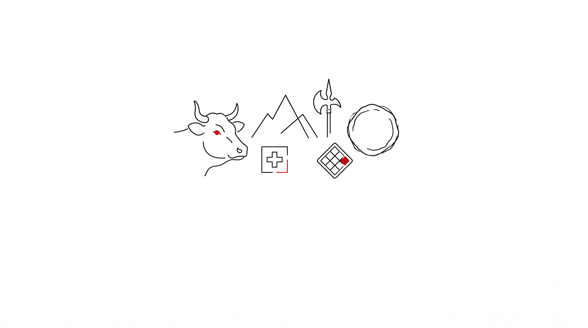

Swiss & Valais Quiz
Швейцарская викторина
Best score wins Swiss chocolate. Tie-breaker: fastest time.
Prize: the winner chooses one very Swiss gift at the stand.
Приз: победитель выбирает один очень швейцарский подарок на стенде.
Rules: answer fast. No Google. Show the final screen to the Swiss stand.
Правила: отвечайте быстро. Без Google. Покажите финальный экран на стенде.